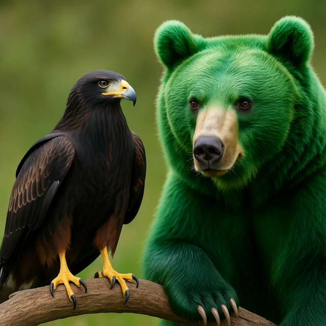
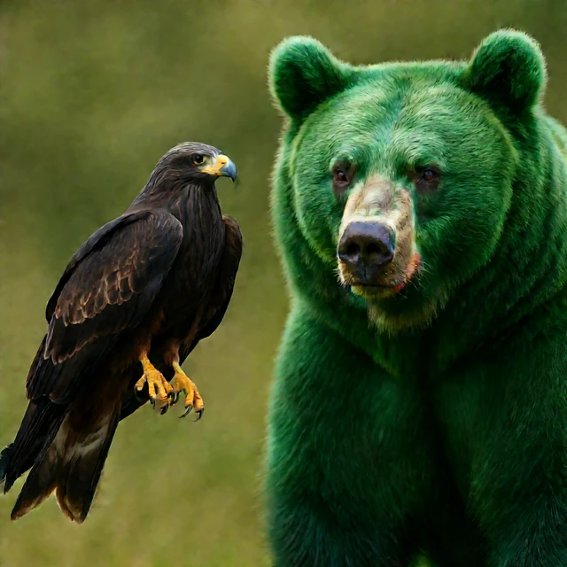
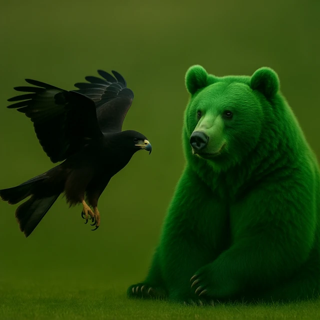
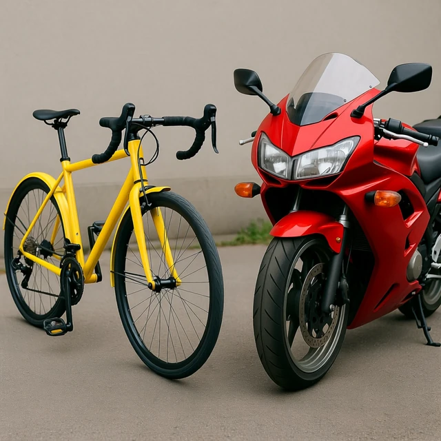
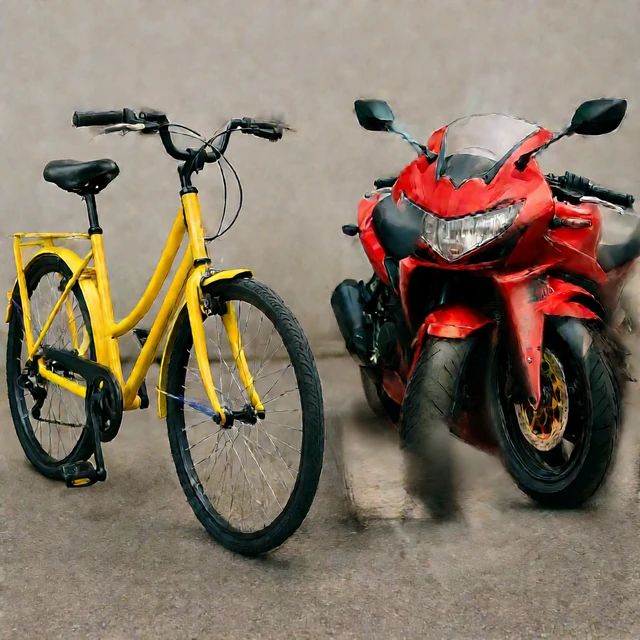
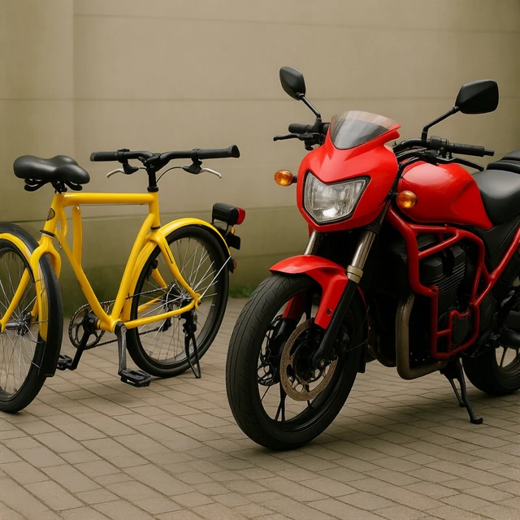

R³-Cache: Refresh, Reconstruct, Reuse for Efficient Diffusion Transformers
Training-free diffusion acceleration through coordinated refresh, error reconstruction, and reuse; 3.4–4.1× faster including decoding.
Details & resultsHide details
Partial computation can update a prediction for the whole image. R³-Cache combines full evaluations that refresh the prediction, sparse evaluations that measure and reconstruct its error, and intervening steps that reuse the correction. Look-ahead sampling and an offline search coordinate these actions without retraining the model.
My contribution: I lead the research direction, method development, implementation, and cross-model evaluation. Across SD3, SD3.5, and Qwen-Image, the method delivers 3.4–4.1× acceleration, including decoding, with up to 75.3% lower LPIPS distance to full sampling than native fewer-step sampling at comparable runtime.






Swipe or scroll to compare all four methods.